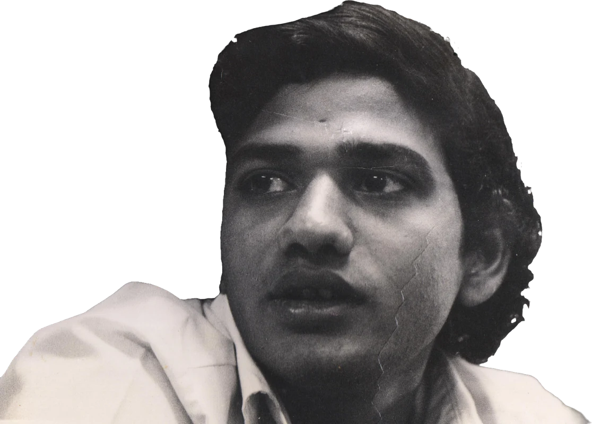

Five decades in pictures
From the student movement to Parliament, from Party Congresses to solidarity with peoples across the world. Select a photograph to view it in full.
From the student movement to Parliament, from Party Congresses to solidarity with peoples across the world. Select a photograph to view it in full.

Photographs courtesy of the Sitaram Yechury Foundation archive, Deshabhimani, Ganashakti and photographers including Amit and Shekhar Yadav. Some captions are approximate — corrections are welcome.